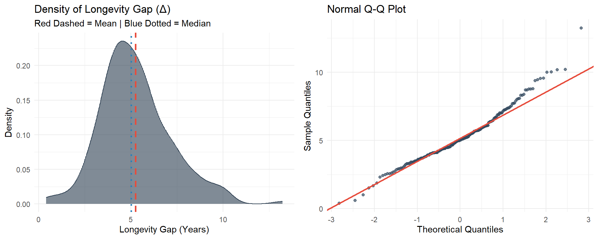
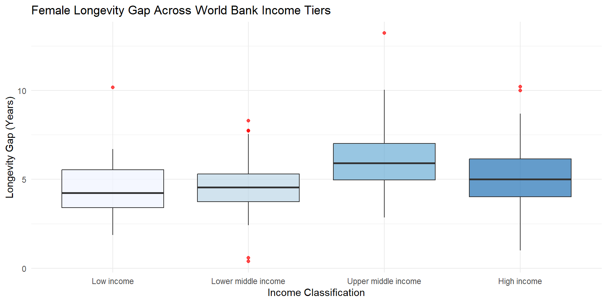

The Gender Longevity Gap: A Global Statistical & Econometric Analysis
Author
Sauliha Kirmani
Published
September 20, 2026
1. Introduction: From Internet Memes to Demographic Reality
1.1 The Spark: “Why Women Live Longer Than Men”
If you have spent any time scrolling through social media over the past few years, you have almost certainly encountered the viral “Why Women Live Longer Than Men” meme template.
Typically featuring a photo or video of men engaging in absurdly hazardous DIY projects, reckless stunts, or hilariously ill-advised workarounds, these memes play on a widely accepted cultural trope: men do foolish things, and therefore, men die younger.
While these internet clips are undeniably hilarious, they pose a genuine, foundational scientific question: Is it statistically true on a global scale that women live longer than men?
What begins as viral humor touches on a profound demographic reality. Is the female longevity advantage merely an artifact of male risk-taking behavior, or is it a universal biological constant? Does this gap hold true in every corner of the world, or do different countries tell a different tale?
This curiosity sparked my study. Moving past the internet memes, this project uses global data and formal statistical methods to evaluate whether women truly outlive men and quantify how wide that gap is.
1.2 Problem Statement
To avoid relying on anecdotal assumptions, this study addresses three central empirical problems:
1. Establishing whether the female longevity advantage is a statistically significant global phenomenon rather than sampling noise.
2. Evaluating the extent of spatial and socioeconomic variation in the female longevity advantage across World Bank geographic regions and income classifications.
1.3 Research Questions & Objectives
To answer these problems, the study is organized around two core research questions and matching analytical objectives:
Research Question (RQ)
Research Objective (RO)
Primary Methodology
RQ1: Is there a statistically significant difference in life expectancy between males and females globally?
RO1: Test for global mean/median differences and establish directional dominance.
Paired t-test / Wilcoxon Signed-Rank Test
RQ2: Does the size of this longevity gap vary significantly across countries and income tiers?
RO2: Quantify and visualize spatial and income-level variance in the longevity gap (\(\Delta_i\)).
Choropleth Mapping & Income Stratification
1.4 Formal Statistical Hypotheses
To execute RO1 rigorously, a two-step hypothesis testing framework is established:
Step 1: Two-Tailed Difference Test
First, determine if a statistically significant difference exists in life expectancy between sexes: \[H_{01}: \mu_{\text{Female}} - \mu_{\text{Male}} = 0 \quad \text{vs.} \quad H_{11}: \mu_{\text{Female}} - \mu_{\text{Male}} \neq 0\]
Step 2: One-Tailed Directional Test
Upon rejection of \(H_{01}\), evaluate whether female life expectancy is strictly higher: \[H_{02}: \mu_{\text{Female}} - \mu_{\text{Male}} \le 0 \quad \text{vs.} \quad H_{12}: \mu_{\text{Female}} - \mu_{\text{Male}} > 0\]
Operational Metric: The Absolute Longevity Gap (\(\Delta_i\))
For any given country \(i\), the primary dependent variable for spatial and econometric modeling is defined as: \[\Delta_i = \text{LifeExp}_{\text{Female}, i} - \text{LifeExp}_{\text{Male}, i}\]
2. Data Strategy & Ingestion
To ensure reproducibility, data is pulled directly from the World Bank World Development Indicators (WDI) API. We extract cross-sectional country data across two key domains: life expectancy by sex and macroeconomic development. Requisite libraries are loaded in Rstudio and the analysis begins by loading and cleaning the data (code for reference below).
Data on iso3 classification (the three letters used to denote a country, like IND for India), regional classification and income level is extracted from wb_countries() in R. Data on life expectancy of both genders and per capita GDP is pulled live from World Bank’s Global Database via their API.
Hypothesis testing requires assessing the underlying distribution of data. The underlying distribution of the data determines what statistical tests can be applied- parametric tests are used for data that follow normal distribution, and non parametric tests are used otherwise. (This is a rather vast subject with researchers sometimes choosing to normalize data if suitable, however, we’ll work with the underlying distribution of the data in this project.)
2.1 Checking for Normality
The fastest way to look for normality is using plots.
Code
p1 <-ggplot(clean_df, aes(x = longevity_gap)) +geom_density(fill ="#2c3e50", alpha =0.6, color ="#2c3e50") +geom_vline(aes(xintercept =mean(longevity_gap)), color ="#e74c3c", linetype ="dashed", size =1) +geom_vline(aes(xintercept =median(longevity_gap)), color ="#2980b9", linetype ="dotted", size =1) +theme_minimal() +labs(title ="Density of Longevity Gap (Δ)",subtitle ="Red Dashed = Mean | Blue Dotted = Median",x ="Longevity Gap (Years)", y ="Density" )p2 <-ggplot(clean_df, aes(sample = longevity_gap)) +stat_qq(color ="#34495e", alpha =0.7) +stat_qq_line(color ="#e74c3c", size =1) +theme_minimal() +labs(title ="Normal Q-Q Plot", x ="Theoretical Quantiles", y ="Sample Quantiles")plot_grid(p1, p2, ncol =2)

The plot is visibly skewed to the right (tail to the right), meaning while female longevity advantage is on average a little over 5 years for most countries, some countries show exceptionally high advantage to females in longevity, with the advantage going over 10 years. The right skew in the distribution is confirmed by the convexity of the Normal Q-Q plot.
2.2 Female Longevity Advantage Around The World
The following map represents the additional years women live in each country on average, a chloropleth map is used to indicate the difference. The advantage for any country can be checked by hovering the mouse over that country. This is an interactive map, feel free to explore it.
Having established through the visual diagnostics that the global longevity gap exhibits significant positive skewness, we proceed to formal hypothesis testing. To ensure methodological rigour, a dual testing framework is employed- a parametric paired t test and a non-parametric Wilcoxon Signed Rank Test.
Code
library(tidyverse)library(knitr)# ==========================================# 1. RO1: GLOBAL HYPOTHESIS TESTING# ==========================================# A. Standard Shapiro-Wilk Test (Base R)shapiro_res <-shapiro.test(clean_df$longevity_gap)# B. Paired t-test (Base R)t_out <-t.test(clean_df$female_lexp, clean_df$male_lexp, paired =TRUE, alternative ="greater")# C. Wilcoxon Signed-Rank Test (Base R)wilcox_out <-wilcox.test(clean_df$female_lexp, clean_df$male_lexp, paired =TRUE, alternative ="greater")# D. Effect Size Calculation (Cohen's d)mean_diff <-mean(clean_df$longevity_gap, na.rm =TRUE)sd_diff <-sd(clean_df$longevity_gap, na.rm =TRUE)cohen_d_val <- mean_diff / sd_diff# Extract pure numeric scalarsval_shap_stat <-as.numeric(shapiro_res$statistic)val_shap_p <-as.numeric(shapiro_res$p.value)val_t_stat <-as.numeric(t_out$statistic)val_t_p <-as.numeric(t_out$p.value)val_wil_stat <-as.numeric(wilcox_out$statistic)val_wil_p <-as.numeric(wilcox_out$p.value)val_d_stat <-as.numeric(cohen_d_val)# Format p-value strings safely without format.pval length conflictsp_shap_str <-ifelse(val_shap_p <0.001, "< 0.001", sprintf("%.3f", val_shap_p))p_t_str <-ifelse(val_t_p <0.001, "< 0.001", sprintf("%.3f", val_t_p))p_wil_str <-ifelse(val_wil_p <0.001, "< 0.001", sprintf("%.3f", val_wil_p))# Construct RO1 Tablero1_df <-data.frame(Test =c("Shapiro-Wilk (Normality Check)", "Paired t-test (Parametric)", "Wilcoxon Signed-Rank (Non-Parametric)", "Cohen's d (Effect Size)" ),Statistic =c(round(val_shap_stat, 3), round(val_t_stat, 3), round(val_wil_stat, 3), round(val_d_stat, 3) ),P_Value =c(p_shap_str, p_t_str, p_wil_str, "N/A"),Verdict =c(ifelse(val_shap_p <0.05, "Non-Normal", "Normally Distributed"),"Reject H0, Female LExp > Male LExp (p < 0.001)","Reject H0, Female LExp > Male LExp (p < 0.001)",ifelse(val_d_stat >0.8, "Large Effect Size (d > 0.8)", "Moderate Effect Size") ),stringsAsFactors =FALSE)colnames(ro1_df) <-c("Statistical Test", "Test Statistic", "p-value", "Verdict / Decision")kable(ro1_df, caption ="Table 1: Inferential Testing Summary for Global Longevity Gap (RO1)")
Table 1: Inferential Testing Summary for Global Longevity Gap (RO1)
Statistical Test
Test Statistic
p-value
Verdict / Decision
Shapiro-Wilk (Normality Check)
0.971
< 0.001
Non-Normal
Paired t-test (Parametric)
39.595
< 0.001
Reject H0, Female LExp > Male LExp (p < 0.001)
Wilcoxon Signed-Rank (Non-Parametric)
22366.000
< 0.001
Reject H0, Female LExp > Male LExp (p < 0.001)
Cohen’s d (Effect Size)
2.726
N/A
Large Effect Size (d > 0.8)
Code
# ==========================================# 2. RO2: INCOME TIER VARIATION (Kruskal-Wallis)# ==========================================# Base R Kruskal-Wallis Testkw_out <-kruskal.test(longevity_gap ~ income_level, data = clean_df)val_kw_stat <-as.numeric(kw_out$statistic)val_kw_df <-as.numeric(kw_out$parameter)val_kw_p <-as.numeric(kw_out$p.value)p_kw_str <-ifelse(val_kw_p <0.001, "< 0.001", sprintf("%.3f", val_kw_p))ro2_df <-data.frame(Objective ="RO2: Income Tier Heterogeneity",Group ="Income Level (4 Tiers)",ChiSquare =round(val_kw_stat, 3),DF = val_kw_df,P_Value = p_kw_str,Verdict =ifelse(val_kw_p <0.05, "Significant Difference Across Tiers (p < 0.001)", "No Significant Difference"),stringsAsFactors =FALSE)colnames(ro2_df) <-c("Research Objective", "Grouping Variable", "Chi-Squared (χ²)", "Degrees of Freedom", "p-value", "Verdict")kable(ro2_df, caption ="Table 2: Kruskal-Wallis Non-Parametric Test Across World Bank Income Tiers (RO2)")
Table 2: Kruskal-Wallis Non-Parametric Test Across World Bank Income Tiers (RO2)
Research Objective
Grouping Variable
Chi-Squared (χ²)
Degrees of Freedom
p-value
Verdict
RO2: Income Tier Heterogeneity
Income Level (4 Tiers)
19.186
3
< 0.001
Significant Difference Across Tiers (p < 0.001)
3.1 The memes are not lying!
Shapiro-Wilk test confirms the non-normality of the data. Both parametric and non-parametric tests confirm that female life expectancy is higher than male life expectancy. With this, we are able to confirm that it is true that on average women live longer than men.
Kruskal-Wallis test confirms that female longevity advantage is not uniformly distributed across national income tiers. Nations in different income tiers experience different median longevity gaps.
4. Female Longevity Gap Across World Bank Income Tiers
Code
ggplot(clean_df, aes(x = income_level, y = longevity_gap, fill = income_level)) +geom_boxplot(alpha =0.7, outlier.color ="red") +scale_fill_brewer(palette ="Blues") +theme_minimal() +theme(legend.position ="none") +labs(title ="Female Longevity Gap Across World Bank Income Tiers",x ="Income Classification",y ="Longevity Gap (Years)" )

Higher income tiers generally exhibit wider, more stabilized female advantage compared to lower income tiers. Lower income countries have much more volatile gaps from country to country. This means female longevity advantage is more predictable in wealthier nations.
4.1 Outliers
Code
library(tidyverse)library(ggrepel)# Define explicit contextual benchmark countriestarget_anchors <-c("India", "Pakistan", "United States", "Japan", "Nigeria")# Select top 3 upper-tail extremes, top 2 lower-tail extremes, plus target benchmarksannotated_countries <- clean_df %>%filter(!is.na(longevity_gap)) %>%mutate(rank_high =min_rank(desc(longevity_gap)),rank_low =min_rank(longevity_gap) ) %>%filter( rank_high <=3| rank_low <=2| country %in% target_anchors ) %>%distinct(country, .keep_all =TRUE)# Render Clean Kernel Density Plotggplot(clean_df, aes(x = longevity_gap)) +# Smooth Kernel Density Surfacegeom_density(fill ="#2b5c8f", alpha =0.35, color ="#1a365d", size =0.8) +# Discrete Axis Ticks for Annotated Countries (Replaces large points)geom_rug(data = annotated_countries, aes(x = longevity_gap), sides ="b", color ="#1a365d", size =0.8, length =unit(0.03, "npc") ) +# Mean & Median Vertical Guidelinesgeom_vline(aes(xintercept =mean(longevity_gap, na.rm =TRUE)), color ="#c53030", linetype ="dashed", size =0.6) +geom_vline(aes(xintercept =median(longevity_gap, na.rm =TRUE)), color ="#2b6cb0", linetype ="dotted", size =0.7) +# Repelled Callout Labelsgeom_text_repel(data = annotated_countries,aes(x = longevity_gap, y =0, label =paste0(country, "\n(", round(longevity_gap, 1), " yrs)")),direction ="both",nudge_y =0.08,box.padding =0.5,point.padding =0.3,segment.color ="#718096",segment.size =0.4,segment.curvature =-0.1,size =3.2,lineheight =0.85,max.overlaps =Inf ) +# Axis Scaling & Labelingscale_x_continuous(breaks =seq(-2, 12, by =2)) +scale_y_continuous(expand =expansion(mult =c(0, 0.25))) +labs(title ="Global Distribution of the Female Longevity Advantage",subtitle ="Kernel density estimate with key regional anchors and tail benchmarks",x ="Longevity Gap (Female - Male Life Expectancy in Years)",y ="Density" ) +theme_minimal(base_size =12) +theme(plot.title =element_text(face ="bold", size =14),panel.grid.minor =element_blank(),panel.grid.major.x =element_line(color ="#e2e8f0") )
While the overall findings demonstrate a strong, statistically significant association between higher national income tiers and an expanding female longevity advantage (Kruskal-Wallis p <0.001), the detailed analysis of the tails indicate exceptions within outliers on both tales.
5.Conclusion
We set out to answer if females around the world live longer than the men on average, and using paired t test and Wilcoxon Signed Rank test, we confirmed that the memes on “Why Women live Longer Than Men” were not lying, it is statistically established that there is a significant difference in the average lifespan of both genders, and women on average live longer. We also used the World Bank income classifcation of countries and found that female longevity advantage is more stable and predictable in higher income countries. We looked at outliers on both tails and found something interesting, while higher income countries do show exceptionally high longevity advantage for females and lower income countries show a very small advantage, there are exceptions within the outliers- Central African Republic on the higher end and Quwait, Qatar and Bahrain on the lower end. This signals that while income tier of a country is strongly associated with the female longevity advantage, it may not explain all.